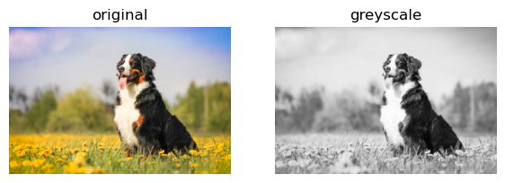
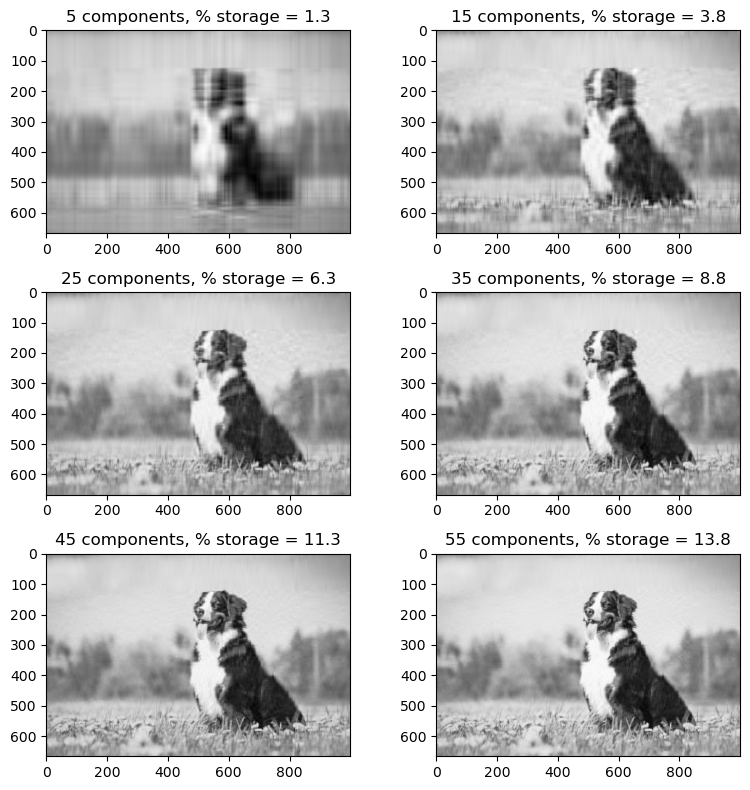
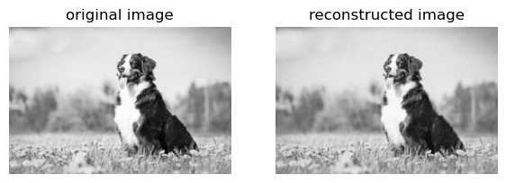
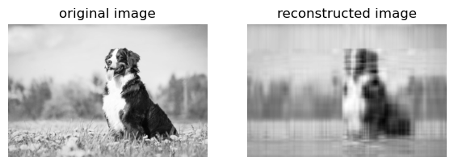
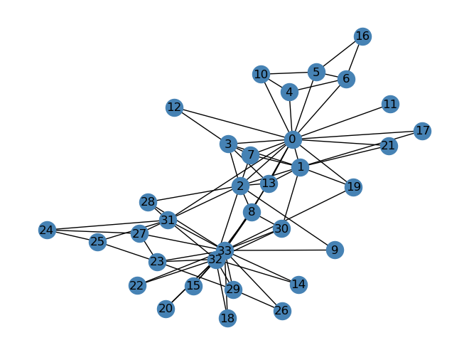
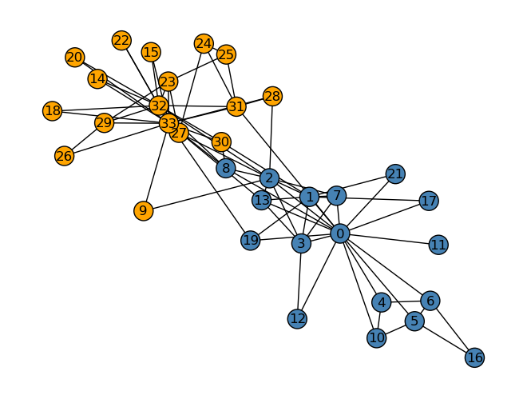
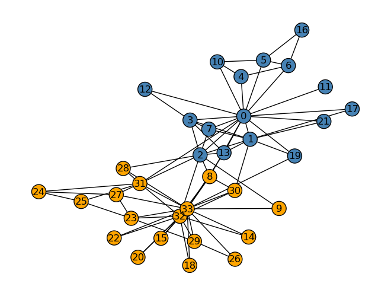

import pandas as pd
import numpy as np
from matplotlib import pyplot as pltUnsupervised Learning Blog
Part One: Singular Value Decomposition
Introduction
In this blog, I look at singular value decomposition as it pertains to images. Singular value decomposition is a matrix factorization that can be used to compress images, decreasing the storage needed to store an image.
The singular value decomposition of a real matrix A is:
\[ A = U*D*V^T\]
In the case that D is a real, diagonal matrix and real matrices U and V are orthogonal matrices. One can use this singular value decomposition to compress images down to much smaller images by selecting a component we can call ‘k’; by only selecting the first k columns of U, the top k singular values in D, and the first k rows of V, one can approximate the original matrix A by matrix multiplying these three new matrices.
With smaller values of k, understandably, the reconstructed matrix will be further from the original matrix. With higher values of k, the reconstructed matrix will be more similar to the original matrix.
Because images themselves are matrices, one can apply singular value decomposition to images. The code below demonstrates the process.
Part 1: Image Compression with Singular Value Decompression
Below I created a function called svd_reconstruct that uses singular value decomposition to compress an image as explained above. There is some set-up code prior to that function; a function called compare_images that allows a user to compare the original and reconstructed images, a read_image function that reads in an image from the Internet, and a to_greyscale image (with examples) to convert an image to greyscale.
def compare_images(A, A_):
fig, axarr = plt.subplots(1, 2, figsize = (7,3))
axarr[0].imshow(A, cmap = "Greys")
axarr[0].axis("off")
axarr[0].set(title = "original image")
axarr[1].imshow(A_, cmap = "Greys")
axarr[1].axis("off")
axarr[1].set(title = "reconstructed image")
import PIL
import urllib
def read_image(url):
return np.array(PIL.Image.open(urllib.request.urlopen(url)))url = "https://cdn-prd.content.metamorphosis.com/wp-content/uploads/sites/2/2020/10/shutterstock_1073056451-2.jpg"
img = read_image(url)fig, axarr = plt.subplots(1, 2, figsize = (7, 3))
def to_greyscale(im):
return 1 - np.dot(im[...,:3], [0.2989, 0.5870, 0.1140])
grey_img = to_greyscale(img)
axarr[0].imshow(img)
axarr[0].axis("off")
axarr[0].set(title = "original")
axarr[1].imshow(grey_img, cmap = "Greys")
axarr[1].axis("off")
axarr[1].set(title = "greyscale")[Text(0.5, 1.0, 'greyscale')]
After that set up, below is the actual implementation of the svd_reconstruct function alongside a brief test of an original image and reconstructed image of four components.
def svd_reconstruct(img, k):
# A = U D V(transpose)
U, sigma, V = np.linalg.svd(img)
D = np.zeros_like(img, dtype=float)
D[:min(img.shape), :min(img.shape)] = np.diag(sigma)
U_ = U[:, :k]
D_ = D[:k, :k]
V_ = V[:k, :]
return U_ @ D_ @ V_grey_img_2 = svd_reconstruct(grey_img, 4)
compare_images(grey_img, grey_img_2)Experimentation
The purpose of singular value decomposition in compressing images is to decrease storage space an image takes up. The function below, svd_experiment, runs through component values of 5, 15, 25, 35, 45, and 55 and explores what percentage of the original storage each image takes up. I increased the value of k until the naked eye (or at least my naked eye) could not perceive a difference between the original image and the reconstructed image. I confirmed that by using the compare_images function.
At 55 components, the reconstructed image only took up 13.8% of the original image’s storage space. This is a significant difference in storage for a minute, invisible-to-the-human-eye change in image structure.
def svd_experiment(img):
fig = plt.figure(figsize = (8, 8))
columns = 2
rows = 3
k_arr = [5, 15, 25, 35, 45, 55]
ax=[]
for i in range(0, columns*rows):
new_img = svd_reconstruct(img, k_arr[i])
#storage
amt_storage = (k_arr[i] * (img.shape[0] + img.shape[1] + 1)) / (img.shape[0] * img.shape[1])
ax.append(fig.add_subplot(rows, columns, i+1))
ax[-1].set_title(f"{k_arr[i]} components, % storage = {(round(100 * amt_storage,1))}")
# fig.add_subplot(rows, columns, i)
plt.imshow(new_img, cmap="Greys")
plt.tight_layout()
plt.show()
svd_experiment(grey_img)
compare_images(grey_img, svd_reconstruct(grey_img, 55))
Extras: Modifying svd_reconstruct with Compression Factors
After finishing the svd_reconstruct, it is important to note that rarely do people understand image compression by the value of k. They are more likely to use a compression factor, how much they want the image storage to decrease by. Below I implemented a version of svd_reconstruct in which the user imputs the compression factor (i.e. 5 means the image is compressed to 1/5 the original storage space).
This required some extra math within the reconstruct function to determine the value of k for a given compression factor. That code can be seen below.
def svd_reconstruct_extra(img, comp_factor):
#get the new size of the compressed image
new_size = (img.shape[0] * img.shape[1]) / comp_factor
#get the k value (integer value) from the new size of the compressed image
k = int(new_size / (img.shape[0] + img.shape[0] + 1))
U, sigma, V = np.linalg.svd(img)
D = np.zeros_like(img, dtype=float)
D[:min(img.shape), :min(img.shape)] = np.diag(sigma)
U_ = U[:, :k]
D_ = D[:k, :k]
V_ = V[:k, :]
return U_ @ D_ @ V_Below I tested two different compression factors; one very large (80), and one fairly small (10). It is clear that with a higher compression factor – the image taking up significantly less space than the original – the reconstructed image is far different than the original. With a smaller compression factor, 10, the reconstructed image is nearly the same as the original image.
grey_img_2 = svd_reconstruct_extra(grey_img, 80)
compare_images(grey_img, grey_img_2)
grey_img_2 = svd_reconstruct_extra(grey_img, 10)
compare_images(grey_img, grey_img_2)Part Two: Spectral Community Detection
Laplacian Spectral Clustering
Laplacian Spectral Clustering, which is demonstrated below, is a clustering algorithm that works whether data is linearly separable or not. This makes it helpful in separating data that is not linearly separable, potentially like graphs or circular divisions.
Laplacian clustering works in the following manner. First, we get the adjacency matrix of the graph. The adjacency matrix demonstrates the edges between nodes. Let’s call this adjacency matrix A. In order to determine relationships between nodes, we can consider the edges between different clusters; we want few edges that connect nodes from different clusters. Let’s call these edges connecting between edges cuts. We want to minimize the cuts between clusters.
We are trying to find a vector z such that the number of cuts are minimized. Finding a binary vector \(z \in {0,1}\) is an NP-hard problem, but we can approximate the binary vector z by doing the following.
A normalized Laplacian matrix can be defined as the matrix \[ L = D^{-1}[D - A] \]
The diagonal matrix D is the diagonal matrix where
\[ D = \begin{bmatrix}{\sum_{i = 1}^{n} a_{i1}} && \\ & \ddots & \ \ && \sum_{i = 1}^{n} a_{in} \end{bmatrix} \]
When we have the normalized Laplacian L, z should be the eigenvector with the second-smallest eigenvalue of the normalized Laplacian. With this binary vector, we can split the non-linear data into clusters.
I will demonstrate this below, but begin with a little insight into the graph used in this process.
The Graph
Below is the graph nicknamed the “Karate Club Graph”, a graph in which each node is an individual member of a karate club. The edges are measures of social ties.
import networkx as nx
G = nx.karate_club_graph()
layout = nx.layout.fruchterman_reingold_layout(G)
nx.draw(G, layout, with_labels=True, node_color = "steelblue")
The karate club ended up splitting between two officers, who we will call Mr. Hi and Officer. Knowing which club each member has gone to, we can create the graph below. It colors each node orange if that member belongs to the Officer club and blue if they belong to the Mr. Hi club.
clubs = nx.get_node_attributes(G, "club")nx.draw(G, layout,
with_labels=True,
node_color = ["orange" if clubs[i] == "Officer" else "steelblue" for i in G.nodes()],
edgecolors = "black" # confusingly, this is the color of node borders, not of edges
) 
Laplacian Spectral Clustering on the Karate Club Graph
Below is the process for applying the Laplacian clustering method described above on the karate club graph. The implemented function ‘spectral_clustering’ returns a binary vector, z, that determines which cluster each node belongs to.
from sklearn.neighbors import NearestNeighbors
import networkx as nx
def spectral_clustering(G):
A = nx.adjacency_matrix(G).toarray()
#find D, start by getting the sums of each row of A
row_sums = np.sum(A, axis = 1)
#put sums into diagonal matrix D
D = np.diag(row_sums)
#find normalized Laplacian
L = np.linalg.inv(D)@(D - A)
# find z, eigenvector with second smallest eigenvalue of Laplacian
eig_vals, eig_vecs = np.linalg.eig(L)
#sort eigenvalues, get the second smallest eigenvalue
vals_sorted = np.sort(eig_vals)
z_val = vals_sorted[1]
#get index of second smallest eigenvalue and get corresponding eigenvector: this is z
ind = eig_vals.tolist().index(z_val)
z = eig_vecs[:,ind]
#make z binary
z = np.where(z > 0, 1, 0)
return zThe Accuracy of Laplacian Clustering
The Laplacian clustering did a remarkably good job of separating the nodes into their two clusters or clubs. There was one mistake, node number 8, who went with club Mr. Hi but which my Laplacian clustering algorithm placed with the Officer club. Every other node was placed in the correct cluster. It is clear that Laplacian clustering worked very well in this case.
z = spectral_clustering(G)
nx.draw(G, layout,
with_labels=True,
node_color = ["orange" if z[i] == 0 else "steelblue" for i in G.nodes()],
edgecolors = "black" # confusingly, this is the color of node borders, not of edges
) 